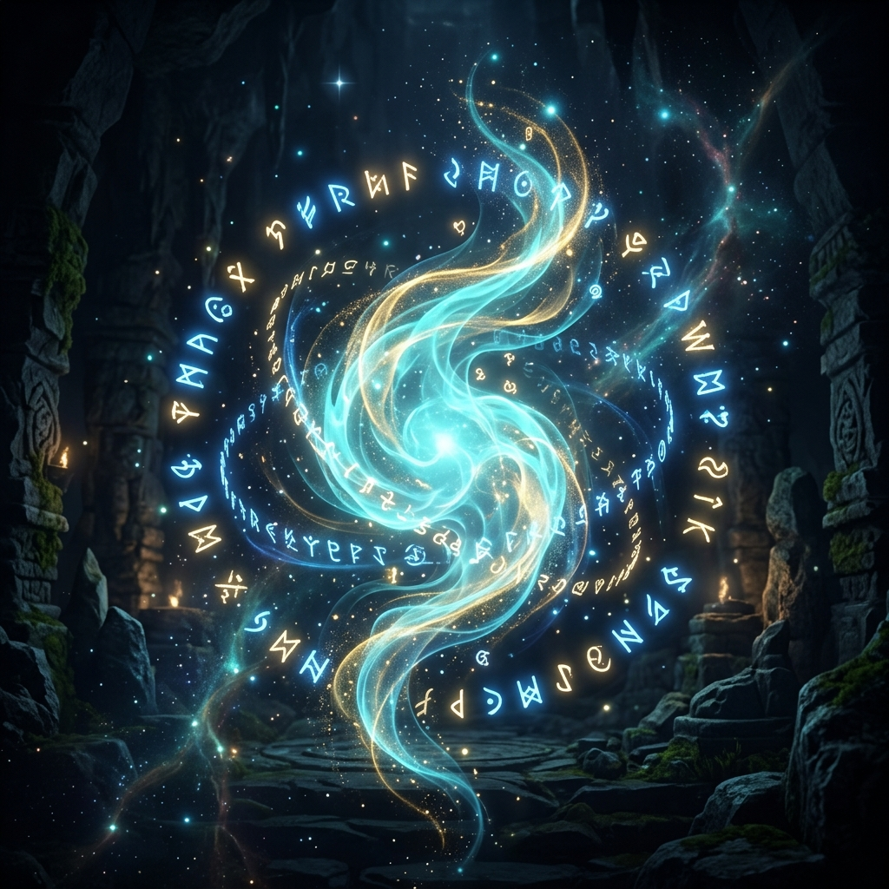

NPC DIALOGUE ENGINE
Смотритель башни сверяет твой след.
Это может быть обычный разговор с NPC, но он проходит через сценарный слой: ответы меняют репутацию, открывают сервисы и пишут флаги в состояние локации.
Интерфейс подсвечивает не только текст, но и последствия. Репутация NPC, фракции и локальные флаги могут измениться даже без боя.
Если текста станет больше, он скроллится внутри этой зоны, а нижний блок решений остается на месте.